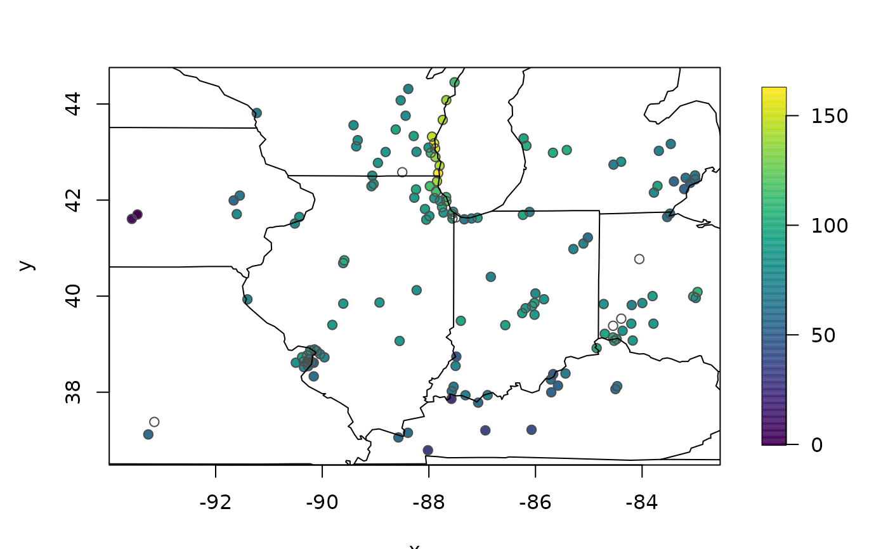
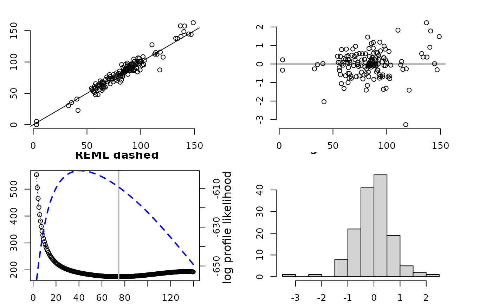
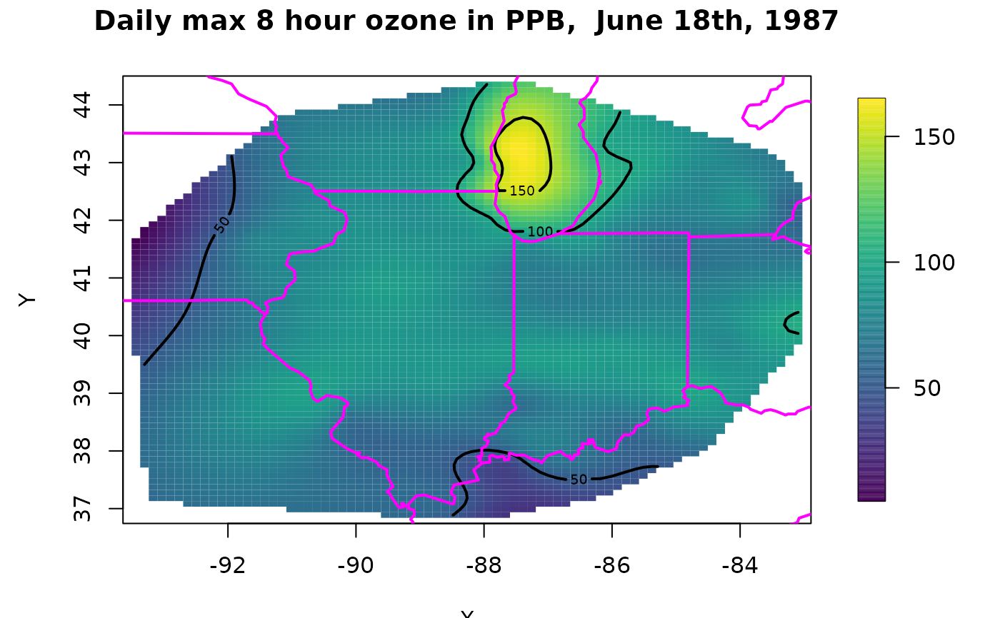
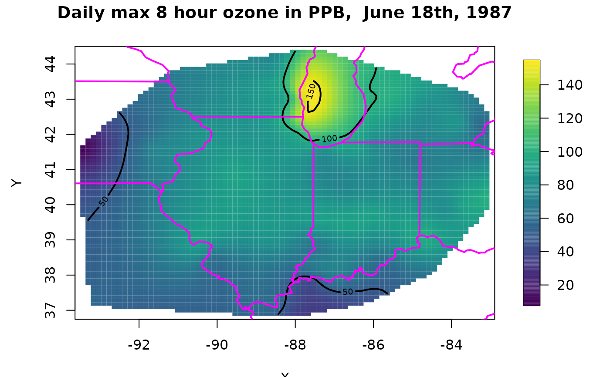

fields.Rdfields is a collection of functions for curve and function
fitting with an emphasis on spatial data and spatial statistics. It was developed over 20+ years to provide easy to use but sophisticated tools for analyzing
spatial data, particularly that encountered in the environmental sciences. For the impatient users, jump to the examples below to see how easy this is use.
Please send bugs and questions to Doug Nychka, nychka@mines.edu. Positive
comments are also welcome!
The major methods implemented include cubic and thin plate splines, universal Kriging and Kriging for large data sets. A more modern framework for Kriging is spatial process estimation with covariance parameters determined by maximum likelihood and the uncertainty derived from assumptions of a Gaussian process. Throughout we try to include reasonable defaults in functions that reflect our experience with analyzing spatial data. For example, the Matern covariance function is the default choice for the main spatial method.
A key feature of this package is any
covariance function implemented in R code can be used for spatial prediction through the spatial functions.
Another important feature is that fields will take advantage of compactly
supported covariance functions in a seamless way through
the spam package.
See library( help=fields) for a listing of all the
fields contents. We also recommend the thoughtful vignette created by Ashton Weins, Mitchell Krock, and Emma Lilly (fieldsVignette.pdf) in the
fields github repository.
fields strives to have readable and tutorial code. Take a look at the
source code for mKrig to see how things work
"under the hood". E.g. how a linear algebra computation is
overloaded to handle sparse matrices and how an output object is built up sequentially throughout a computation.
The fields source code is liberally commented. Unfortunately on loading
this package, R will
strip comments from the source for efficiency. You can go to
CRAN fields page to download
the latest "tarball" ( aka Package Source) and unzip to get code with comments.
We also keep the most recent version of this package at the
fields github repository.
and for commented source go to the
the subdirectory fields/src. This may be a more recent version than what is posted to CRAN.
Major methods
spatialProcess An easy to use method that fits a spatial process model
( e.g. Kriging) but also estimates the key spatial parameters: nugget variance, sill variance and range by maximum likelihood. Default covariance model is a Matern covariance function. This function and related functions called by this are the core methods in fields and have much flexibility.
spatialProcess allows one to supply a covariance
function that is
written in native R code. See (stationary.cov) that
includes
several families of covariances including the
Matern and several distance metrics including great circle distance
.
sim.spatialProcess and simLocal.spatialProcess provide "one liners"" for conditional simulation of the fitted surface.
Tps Thin Plate spline
regression including GCV and REML estimates for the smoothing parameter. For moderate size data sets as a first look we use Tps all the time. See also fastTps for an
approximate method to handle very large numbers of spatial locations
sreg , splint Fast 1-D cubic smoothing
splines and interpolating splines, a workhorse algorithm for more EDA and more complicated methods.
mKrig (micro Krig)
Efficient Universal Kriging and Gaussian process function,
that can take advantage of sparse covariance
functions and is the core algorithm called by optimization functions and for spatial predictio.
QTps A easy to use extension of thin plate splines for quantile and robust surface fitting.
mKrigMLEGrid and mKrigMLEJoint for maximum likelihood estimates of covariance parameters. These functions also
handle replicate fields, assumed to be independent realizations, at the same locations and can also take any covariate function function written in R following the fields format
Other noteworthy functions
vgram and vgram.matrix find variograms for spatial data (and
with temporal replications.
cover.design Generates space-filling designs where the distance
function is expresed in R code.
Many
convenient functions for working with image data and rationally (well,
maybe reasonably) creating and placing a color scale on plots:
as.image, imagePlot, bubblePlot,
drape.plot, quilt.plot
add.image, crop.image, half.image,
average.image,
designer.colors, color.scale,
in.poly
See also grid.list for how fields works with grids and
US
and world for adding a map quickly.
Generic functions that support the methods
plot - diagnostic plots of fit summary- statistical summary of fit print- shorter version of summary surface- graphical display of fitted surface predict- evaluation fit at arbitrary points predictSE- prediction standard errors at arbitrary points. sim.rf- Simulate a random fields on a 2-d grid.
Try some of the examples from help files for
spatialProcess or Tps.
CO2 Global satelite CO2 concentrations (simulated field)
COmonthlyMet Monthly mean temperatures and precip for Colorado
glacier An elevation dataset of a glacier also used by the applied math community to test interpolation methods.
lennon Image of John Lennon
NorthAmericanRainfall 50+ year average and trend for summer rainfall at
1700+ stations.
ozone2 Daily max 8 hour ozone concentrations for the US midwest
for summer 1987.
PRISMelevation Digital elevations for the
continental US at approximately 4km resolution
rat.diet Small paired study on rat food
intake over time.
RCMexample Regional climate model output
RMelevation Digital elevations for the Rocky
Mountain Empire
WorldBankCO2 Demographic and carbon emission data
for 75 countries and for 1999.
The authors can not guarantee the correctness of any function or program in this package.
# some air quality data, daily surface ozone measurements for
# the Midwest:
data(ozone2)
s<-ozone2$lon.lat
y<- ozone2$y[16,] # June 18, 1987
# quick plot of spatial data with map
bubblePlot( s,y)
US( add=TRUE) # add US map

# fitting a thin plate spline surface (always a good place to
# start). Here the default smoothing (aka lambda) found by cross-validation
fit0<- Tps(s,y)
# fits a GCV thin plate smoothing spline surface to ozone measurements.
# Hey, it does not get any easier than this!
summary(fit0) #diagnostic summary of the fit
#> CALL:
#> Tps(x = s, Y = y)
#>
#> Number of Observations: 147
#> Number of unique points: 147
#> Number of parameters in the null space 3
#> Parameters for fixed spatial drift 3
#> Effective degrees of freedom: 74.6
#> Residual degrees of freedom: 72.4
#> MLE tau 8.307
#> GCV tau 9.276
#> MLE sigma 958000
#> Scale passed for covariance (sigma) <NA>
#> Scale passed for nugget (tau^2) <NA>
#> Smoothing parameter lambda 7.204e-05
#>
#> Residual Summary:
#> min 1st Q median 3rd Q max
#> -30.38000 -3.07900 0.04153 3.35100 20.65000
#>
#> Covariance Model: Rad.cov
#> Names of non-default covariance arguments:
#> p
#>
#> DETAILS ON SMOOTHING PARAMETER:
#> Method used: GCV Cost: 1
#> lambda trA GCV GCV.one GCV.model tauHat
#> 7.204e-05 7.461e+01 1.747e+02 1.747e+02 NA 9.276e+00
#>
#> Summary of all estimates found for lambda
#> lambda trA GCV tauHat -lnLike Prof converge
#> GCV 7.204e-05 74.61 174.7 9.276 609.3 6
#> GCV.model NA NA NA NA NA NA
#> GCV.one 7.204e-05 74.61 174.7 9.276 NA 6
#> RMSE NA NA NA NA NA NA
#> pure error NA NA NA NA NA NA
#> REML 5.653e-04 41.20 188.3 11.643 600.9 5
set.panel(2,2)
#> plot window will lay out plots in a 2 by 2 matrix
plot(fit0) # four diagnostic plots of fit and residuals.

# quick plot of predicted surface
set.panel()
#> plot window will lay out plots in a 1 by 1 matrix
surface(fit0) # contour/image plot of the fitted surface
# see also predictSurface for more control over the evaluation grid
#
US( add=TRUE, col="magenta", lwd=2) # US map overlaid
title("Daily max 8 hour ozone in PPB, June 18th, 1987")

####
fit2<- spatialProcess( s,y)
# a "Kriging" model. The covariance defaults to a Matern
# with smoothness 1.0.
# the nugget, sill and range parameters are found by maximum likelihood
# summary, plot, and surface also work for \code{fit2} !
surface(fit2) # contour/image plot of the fitted surface
US( add=TRUE, col="magenta", lwd=2) # US map overlaid
title("Daily max 8 hour ozone in PPB, June 18th, 1987")

if (FALSE) {
# And 20 approximate conditional draws of the spatial field on a grid
# with uncertainty in the 120PPB contour
look<- simLocal.spatialProcess(fit2, M=20)
for( k in 1:20){
contour( look$x, look$y, look$z[,,k], add=TRUE, level=c(120),
col="white", drawlabels=FALSE)
}
}